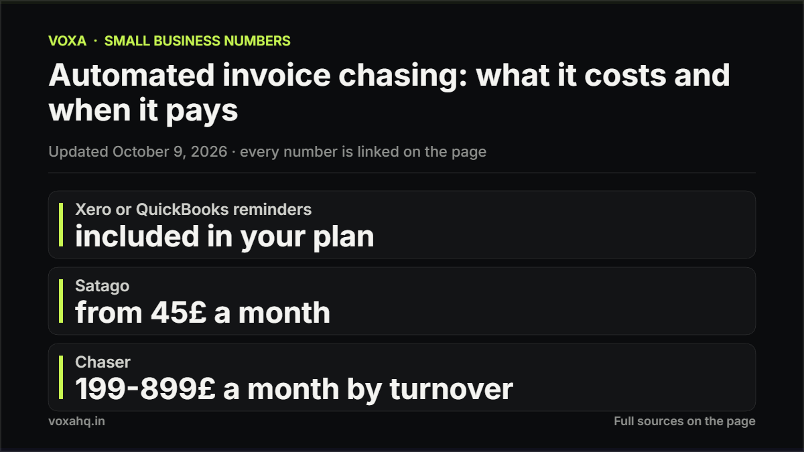

Automated invoice chasing: what it costs and when it pays

Quick answer
Start with the reminder rules already inside Xero or QuickBooks, which cost nothing extra. A dedicated chasing tool only earns its fee once late payments are frequent and the amounts are large, and those start around 45 pounds a month.
- Xero and QuickBooks built-in invoice reminders: included in your plan, no extra cost.
- Satago: from 45 pounds a month, aimed at small UK firms that also want invoice finance.
- Chaser: 199 pounds a month under 4 million pounds turnover, 599 up to 10 million, 899 up to 100 million; extra seats 10 pounds.
- Chaser Care, a human accounts-receivable specialist, starts at 324 pounds a month.
- The catch: chasing tools nudge, they do not force payment. The habit that works is the first reminder landing on time, every time.
Late payment is a numbers problem before it is a software problem. Xero's own small business data for June 2026 shows how common it is: 8.3% of invoices were paid late in the UK, 8.3% in the US, 11.4% in Canada, 5.1% in New Zealand and 4.3% in Australia. That late tail is the queue any chasing tool has to clear.
What the tools cost
| Option | Price | Who it suits |
|---|---|---|
| Xero or QuickBooks reminders | included in your plan | most small businesses |
| Satago | from 45£ a month | small UK firms wanting finance too |
| Chaser | 199–899£ a month by turnover | larger UK teams, 4m+ turnover |
| Chaser Care (human specialist) | from 324£ a month | outsourced accounts receivable |
Chaser sets its tier by turnover, not invoice count. A business at 4.5 million pounds turnover with 80 invoices a month pays the same 599 pounds as one at 9 million with 800. If you send 40 invoices a month, a dedicated tool is almost certainly more than you need.
Before and after: manual versus automated reminders
| Dimension | Chasing by hand | Automated reminders |
|---|---|---|
| First reminder | when you remember | the day it is due |
| Follow-ups | one or two, then you stop | up to five, evenly spaced |
| Tone | depends on your mood | consistent, polite, escalating |
| Time a week | one to two hours | about ten minutes |
| Cost | your time | 0 to 899£ a month |
The break-even
Built-in reminders are free and enough for most freelancers and small teams. A paid tool starts to make sense on three conditions at once: you send more than roughly 40 invoices a month, more than one in ten is paid late, and the average invoice is big enough that one extra week of delay costs more than the subscription. If any one of those is false, turn on the free reminders and revisit next quarter.
Where these numbers come from
- Xero Small Business Insights, June 2026 (invoices paid late)
- Chaser pricing and tiers
- Satago pricing
- Xero invoicing and reminders
The catch
A chasing tool is a louder version of a habit you either have or do not. It will not make a slow client pay, and a stern automated sequence can strain a good relationship. The single change that shortens days-sales-outstanding most is unglamorous: one polite reminder on the due date, from you or a robot, every time. Automate that first, buy the specialist software only if the volume justifies it.
Frequently asked questions
Is there free invoice chasing software?
The reminder features inside Xero, QuickBooks and FreshBooks are effectively free, since they are part of the plan you already pay for. For most small businesses those automated reminders are enough, and a dedicated tool is unnecessary.
How much does invoice chasing software cost?
Satago starts at 45 pounds a month. Chaser runs 199 to 899 pounds a month depending on turnover, with extra users at 10 pounds each, and its human specialist service starts at 324 pounds a month. Larger accounts-receivable platforms cost more.
How often are invoices paid late?
In Xero's June 2026 data, 8.3% of invoices were paid late in both the UK and the US, 11.4% in Canada, 5.1% in New Zealand and 4.3% in Australia.
When is automation worth it for chasing invoices?
When you send more than about 40 invoices a month, more than one in ten is late, and the average invoice is large enough that a week of delay costs more than the subscription. If only one or two of those hold, use the free reminders in your accounting software.
Can automated reminders annoy clients?
They can if the tone is wrong or the sequence is too aggressive. Good setups space reminders out, keep them polite, and stop as soon as the invoice is paid.